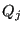
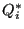

In smoothbadmid.f the position of all subsurface bad midnodes (surface bad
midnodes are not modified) is optimized by minimizing the following function F
(using fminsi):
In the first term of the right hand side 
is the quality measure for
linear tetrahedra. To this end each quadratic tetrahedral element is
subdivided into 8 linear tetrahedrons. This measure seems to be more
appropriate than using 
during the optimization and leads to better
shaped tetrahedrons. So basically the first term optimizes the volume of the 8
linear subtetrahedra of the quadratic tetrahedron. The second term avoids the presence of negative Jacobian determinants at the
integration points (abreviated as ip in the above formula).